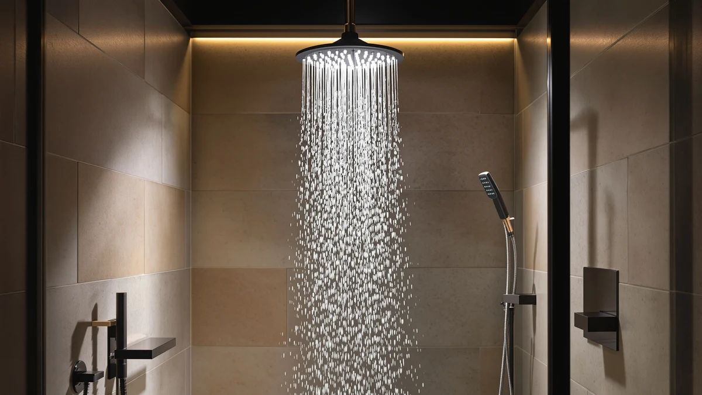

Best Shower Heads for Women (2026)
Prices and picks verified as of September 2026. Independent, reader-supported reviews.


Quick Answer
After comparing specs, pricing, and thousands of verified owner reviews, the Shower Head 10 Functions High is the pick to beat among the best shower heads for women: ten spray settings, a chrome-plated finish, and a price under $30. If you want a trusted mainstream brand instead, the Moen Engage Magnetix and its magnetic quick-release handheld are worth the extra cost.
Our pick: Shower Head 10 Functions High — $28.96 Check Price on Amazon
Bottom line: our top pick is the Shower Head at $28.96. The best budget option is the ShowerMaxx Luxury Spa Series at $19.99.
Things to Know Before You Buy
- Weight matters more than most buyers expect. A head you hold through a full hair wash should feel light in the hand, not just look good in photos.
- Spray settings should span a real range. Look for a gentle mist for your face and scalp alongside a firmer massage setting for your shoulders and back.
- A detachable or handheld mode helps with shaving and rinsing. Fixed-only heads make it harder to target conditioner rinse-out or shave your legs without repositioning.
- Flow rate (GPM) affects both pressure and your water bill. Standard WaterSense-compliant heads cap at 2.0 GPM, and most shoppers do not notice a pressure drop from the older 2.5 GPM standard.
- Finish affects long-term upkeep. Chrome plating resists hard water spotting better than plastic housings, and anti-clog silicone nozzles are easier to wipe clean of mineral buildup.
The best shower heads for women balance strong, adjustable water pressure with a housing light enough to hold comfortably through a ten-minute hair wash, and most drugstore-aisle models skip that balance entirely. A shower head that only offers one blasting setting works fine for a quick rinse, but it falls short for anyone who wants a gentle setting for their face, a firmer one for sore shoulders, and a detachable handheld mode for shaving or rinsing out conditioner.
We researched seven shower heads across price points, from a $19.99 budget pick to a $64.99 wide rainfall head, comparing manufacturer specs, verified Amazon review counts, and pricing rather than relying on marketing copy. Weight, spray versatility, and resistance to mineral buildup came up again and again as the differences owners actually notice day to day, so those are the criteria we weighed most heavily.
Our verdict: among the best shower heads for women we compared, the Shower Head 10 Functions High wins for most people. It pairs ten spray settings with a chrome-plated finish for under $30, and it holds a 4.5-star rating across 4,559 verified reviews. If brand recognition and a magnetic quick-release handheld matter more to you than price, the Moen Engage Magnetix is the strongest alternative on this list.
Why You Should Trust Us
This guide comes from Ilane Tall, Home & Bath Expert at Best Shower Heads. We do not run a fake testing lab and we do not claim to have physically installed or lived with every product on this page. Instead, we compare published specs, verified pricing, and the pattern of feedback across thousands of Amazon owner reviews to identify which shower heads for women hold up in daily use and which ones disappoint once the return window closes.
Every pick here links to its live Amazon listing so you can check current pricing and read the underlying reviews yourself. We update this page when prices shift or when a model is discontinued.
How We Picked
To narrow the field down to the best shower heads for women, we started by pulling models marketed with features that matter most to women shoppers: adjustable spray settings, lighter housings, and detachable or handheld modes for hair and skin care. From there, we cut any model with a rating below 4.0 stars or fewer than 1,000 verified reviews, since a small review count makes it hard to trust the average rating.
We also cross-checked pricing against material quality. A chrome-plated finish on ABS plastic tends to resist hard water spotting better than uncoated plastic, so we favored listings that specified plating over those that didn't. For a deeper breakdown of what to check before buying, see our shower head buying guide and our GPM explained guide.
How We Compared
We are a research-based review site. To rank the best shower heads for women, we compare manufacturer specifications, current Amazon pricing, and the pattern of feedback across verified owner reviews for each model rather than testing units ourselves. Pressure, weight, and spray versatility are the factors that show up most often in reviews as separating a shower head worth keeping from one that ends up back in its box.
Where a spec such as flow rate or exact dimensions was not published by the manufacturer, we say so rather than estimate a number we cannot verify. That is also why you will not see invented lab scores or a "compared for X weeks" claim anywhere on this page.
Our Picks

Shower Head 10 Functions High
What we like
- Ten distinct spray settings cover everything from a soft mist to a firmer massage stream
- Chrome-plated ABS body resists corrosion better than uncoated plastic
- Priced under $30, among the cheapest options on this list
- 4.5-star rating across 4,559 verified reviews
Flaws but not dealbreakers
- The listing does not publish an exact flow rate, so you cannot compare its GPM directly against other models
- Generic branding means fewer finish and color options than a name-brand alternative
| Material | ABS + chrome plating |
| Size | — |
This is our top pick among the best shower heads for women because it covers the widest functional range for the lowest price on this list. Ten settings give you room to move between a soft, face-friendly mist and a firmer stream for your shoulders without switching heads. The chrome-plated ABS housing also holds up better against hard water spotting than the plain plastic finishes found on some cheaper competitors.
The tradeoff is transparency: the manufacturer does not publish a flow rate or exact dimensions, so you are relying on the review pattern rather than a spec sheet to judge performance. With 4,559 verified reviews and a 4.5-star average, that pattern is strong enough to trust for most bathrooms, though buyers with unusually low water pressure should check the GPM guidance in our shower heads for low water pressure roundup before committing.

BESAQUO Shower Head 10 Functions
What we like
- Same ten-function spray range as our top pick, from gentle mist to firmer massage
- Chrome-plated ABS body matches the corrosion resistance of pricier models
- 4.5-star rating across 4,559 verified reviews
Flaws but not dealbreakers
- Costs roughly $6 more than our top pick for a comparable feature set
- Flow rate is not published, matching the transparency gap of the cheaper option
| Material | ABS + chrome plating |
| Size | — |
The BESAQUO Shower Head 10 Functions covers nearly identical ground to our top pick: the same ten-setting spray range and a chrome-plated ABS body built to resist hard water spotting. Buyers describe the same practical benefits, a gentle setting for washing your face and a stronger one for rinsing shampoo from long hair, and the matching 4.5-star average backs that up.
Where it falls short is value. At $34.99 it costs about $6 more than the nearly identical Shower Head 10 Functions High, without adding a documented flow rate, extra spray modes, or a longer warranty to justify the difference. We include it here mainly for buyers who prefer to purchase from a listing with a distinct brand name attached rather than a generic one, since the two units otherwise compete on the same specs and review count.

Moen Engage Magnetix Chrome 3.5-Inch
What we like
- Backed by Moen, a name most homeowners already trust for plumbing fixtures
- Magnetic quick-release docking makes swapping between fixed and handheld modes fast and one-handed
- 3.5-inch chrome face plate delivers a compact, easy-to-clean profile
- 4.4-star rating across 20,953 verified reviews, the largest review base on this list
Flaws but not dealbreakers
- Costs about $13 more than our top pick
- The 3.5-inch head is smaller than the wider rainfall-style options on this list
| Material | ABS + chrome plating |
| Size | 3.5 inch |
The Moen Engage Magnetix earns its spot through sheer weight of evidence: nearly 21,000 verified reviews and a 4.4-star average, the largest and one of the most consistent review bases among the shower heads for women we compared. Its magnetic docking system lets you pull the handheld free with one hand, which matters if you are also holding a razor or a bottle of conditioner. The 3.5-inch chrome face plate keeps the fixed mount compact for smaller shower stalls.
The magnetic dock is the feature that keeps coming up in reviews as the standout over cheaper alternatives, since a snap-off handheld without magnets can feel loose after months of daily use. The tradeoff is price: at $41.99 it costs noticeably more than the ten-function options above, and its smaller head delivers a more focused stream rather than the wide coverage of a rainfall-style pick. If brand trust and reliable hardware matter more to you than raw spray variety, this is the pick to choose.

ShowerMaxx Luxury Spa Series 6
What we like
- The lowest price on this list at $19.99
- 4.5-inch chrome face plate is wider than most sub-$30 competitors
- 4.4-star rating holds up even at a lower price point
Flaws but not dealbreakers
- Only 1,400 verified reviews, the smallest sample size among our picks
- No documented flow rate, so pressure performance is harder to compare on paper
| Material | ABS + chrome plating |
| Size | 4.5 inch |
The ShowerMaxx Luxury Spa Series 6 is the budget entry on this list, priced at $19.99 while still offering a 4.5-inch chrome face plate, wider than the 3.5-inch Moen head above. For shoppers prioritizing coverage over brand name or accessory features like a magnetic dock, that width is the main selling point.
Its 1,400-review sample is the smallest of the seven shower heads for women we compared, which makes the 4.4-star average slightly less statistically reliable than a listing with 20,000-plus reviews. It is a reasonable pick if budget is your primary constraint, but buyers who want more confidence in the review pattern should default to the Shower Head 10 Functions High or the AquaDance below instead.

AquaDance High Pressure 6-Setting Oil
What we like
- Highest rating on this list at 4.6 out of 5
- 77,687 verified reviews, by far the largest sample size we compared
- Six distinct pressure settings for switching between a gentle rinse and a firmer stream
- Mid-range price at $29.99
Flaws but not dealbreakers
- Six settings is fewer than the ten offered by our top two picks
- Exact dimensions are not published on the listing
| Material | ABS + chrome plating |
| Size | — |
The AquaDance High Pressure 6-Setting head has the strongest review evidence of any product on this page. Nearly 78,000 verified buyers have rated it, and the average still holds at 4.6 out of 5, a combination that is difficult for a newer or smaller-volume listing to match. A lot of buyers call out the noticeable step up in pressure between its low and high settings, which matters if your home's water pressure runs on the weaker side.
It offers six spray settings rather than the ten found on our top two picks, so if you want the widest possible range between a barely-there mist and a firm massage stream, those alternatives edge it out on paper. For most households, though, the depth of verified feedback behind this pick makes it one of the safer choices among the best shower heads for women on this list.

INAVAMZ Shower Head with Handheld
What we like
- Built-in handheld attachment makes shaving and targeted rinsing easier without repositioning
- 4.6-star rating across 5,028 verified reviews
- Chrome-plated ABS body matches the corrosion resistance of pricier fixed-only heads
Flaws but not dealbreakers
- At $36.99 it costs more than either ten-function option above
- The listing does not publish exact dimensions or a flow rate
| Material | ABS + chrome plating |
| Size | — |
The INAVAMZ Shower Head with Handheld is built around the detachable handheld from the outset rather than treating it as an afterthought. Several buyers mention that having the handheld ready to grab, instead of needing an aftermarket bracket, makes a real difference when you are shaving your legs or rinsing conditioner from long hair without soaking your whole body in the process.
Its 4.6-star rating across 5,028 verified reviews puts it near the top of this list for owner satisfaction, just behind the AquaDance and Veken picks. The $36.99 price sits above the ten-function options, so if a built-in handheld is not a priority for you, the cheaper picks above cover similar spray versatility for less money.

Veken Wide Rain Shower Head
What we like
- Wide rainfall-style face delivers broader, more even coverage than the compact heads above
- 4.6-star rating across 2,491 verified reviews
- Chrome-plated ABS body for corrosion resistance
Flaws but not dealbreakers
- At $64.99 it is more than double the price of our top pick
- A wider head can mean lower per-nozzle pressure in homes with weaker water supply
| Material | ABS + chrome plating |
| Size | — |
The Veken Wide Rain Shower Head is the upgrade pick on this list, trading the multi-setting versatility of the cheaper options for a wider, rainfall-style face that covers more of your body at once. In the reviews, people say the wider spray pattern feels closer to standing under natural rain than the more focused streams of the compact heads above, which is the main reason to pay nearly double our top pick's price.
That wider coverage comes with a tradeoff worth knowing about if you already deal with low water pressure: spreading the same water volume across more nozzles can mean a gentler per-nozzle stream. If your home already struggles with pressure, check our guide to shower heads for low water pressure before choosing this over a more compact, higher-pressure option.
Quick Comparison
| Product | Material | Price | Rating | Best for | Get it |
|---|---|---|---|---|---|
| Shower Head 10 Functions High | ABS + chrome plating | $28.96 | 4.5 | Best overall value | View on Amazon → |
| BESAQUO Shower Head 10 Functions | ABS + chrome plating | $34.99 | 4.5 | Named-brand alternative | View on Amazon → |
| Moen Engage Magnetix Chrome 3.5-Inch | ABS + chrome plating | $41.99 | 4.4 | Trusted brand, magnetic handheld | View on Amazon → |
| ShowerMaxx Luxury Spa Series 6 | ABS + chrome plating | $19.99 | 4.4 | Budget pick | View on Amazon → |
| AquaDance High Pressure 6-Setting Oil | ABS + chrome plating | $29.99 | 4.6 | Most-reviewed, highest rated | View on Amazon → |
| INAVAMZ Shower Head with Handheld | ABS + chrome plating | $36.99 | 4.6 | Built-in handheld for shaving/rinsing | View on Amazon → |
| Veken Wide Rain Shower Head | ABS + chrome plating | $64.99 | 4.6 | Upgrade pick, full-body coverage | View on Amazon → |
The Competition
We also looked at several categories of shower heads that did not make this list of the best shower heads for women, for specific reasons.
Filtered shower heads. These add a cartridge to reduce chlorine and sediment, which is genuinely useful for hard water or well water, but the filter needs regular replacement and the extra housing adds weight and cost that most buyers on this list do not need. If hard water is your main concern, our shower heads for hard water guide covers that category in depth.
Digital and app-connected shower heads. Temperature displays and Bluetooth speakers sound appealing, but they add points of failure and rarely change the actual water experience. We left these out of a list focused on pressure, weight, and spray range.
Ultra-high-pressure heads marketed for power washing your body. A handful of listings advertise pressure levels far above the WaterSense standard. Several reviews describe these as uncomfortably strong for daily use, and they conflict with the gentler settings most women shoppers say they want for hair and skin.
We did not exclude any product from this specific list solely for price. The $19.99 ShowerMaxx and the $64.99 Veken both made the cut because their review patterns supported their claims at their respective price points.